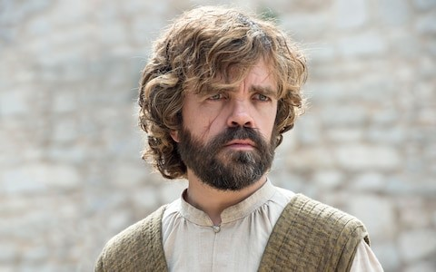

Clever and sensitive, Tyrion is an outlier among the Lannisters. He is a dwarf whose mother died in childbirth, for which he earned the enduring derision of Cersei and his father Tywin. However, Tyrion is also extremely intelligent and his tactical savvy was on display as he led the defence of King’s Landing at the Battle of The Blackwater. Wrongly accused of Joffrey’s murder, he was sprung from prison by Jaime, killed his father Tywin (who was sleeping with Tyrion’s lover Shae) and fled to Essos. There he has become counsellor to Daenerys Targaryen.